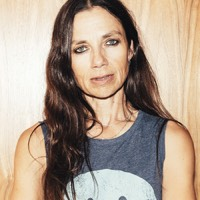

Amazon / Prime Video
9 people whose festival biography mentions Amazon / Prime Video. A mention can mean a job, a past job, a grant, a broadcast or an award: read the bio for which.

 Matthew HeinemanFilmmaker, panelist · 3 editions, 2015–2022
Matthew HeinemanFilmmaker, panelist · 3 editions, 2015–2022- Kate StonehillPanelist, filmmaker · 3 editions, 2022–2025
- Karim AmerPanelist · 2019


 Emma D. MillerPanelist, filmmaker · 2024
Emma D. MillerPanelist, filmmaker · 2024 Nicole SalazarPanelist · 2021
Nicole SalazarPanelist · 2021 Cyan ShreveFestival team · 2023
Cyan ShreveFestival team · 2023